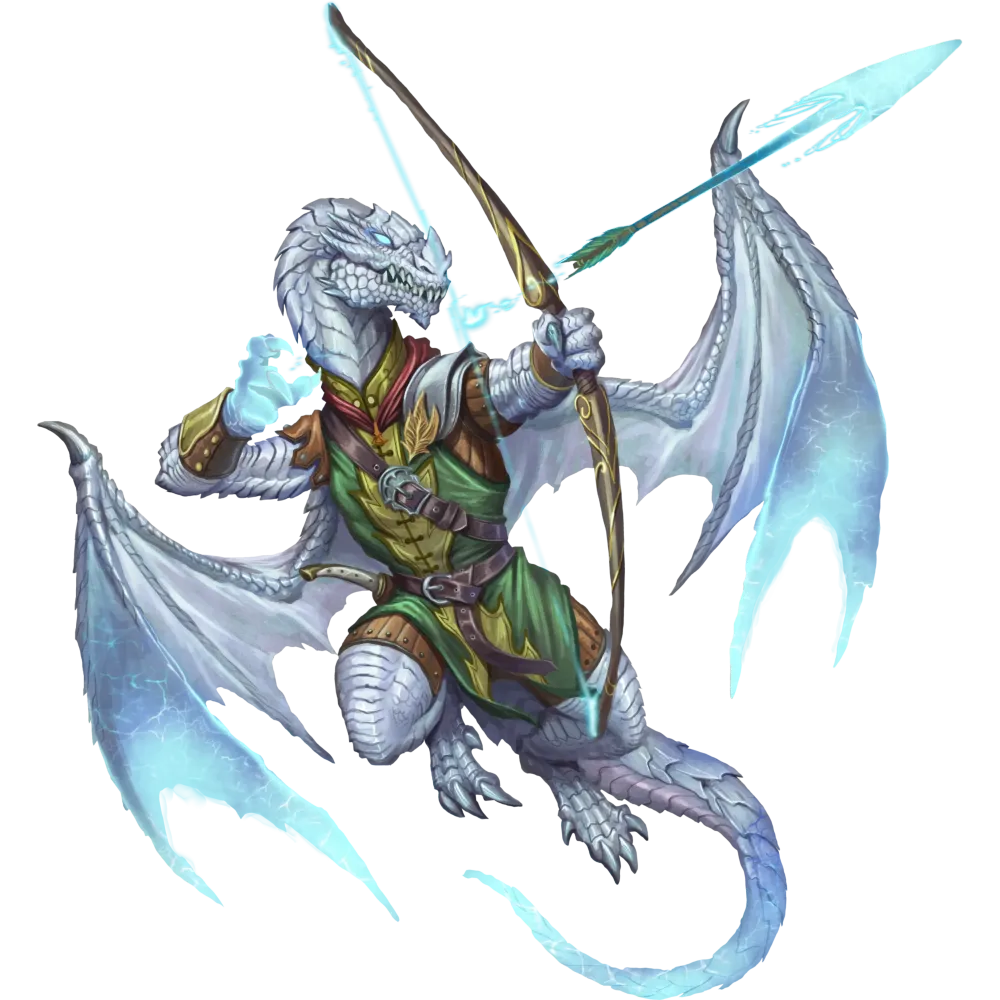

|
在众多类人种族的文化中，巨龙都是力量与强盛的象征。因此，再加上与生俱来的傲慢，巨龙往往很难承认事情出了差错。然而，有些巨龙体内奔涌着狂暴的魔法能量，这股能量一旦失控飙升，便会彻底改变它们的一生。有时，整支龙族血脉都会继承这种魔力，并在漫长的世代中延续下去。但对于这些所谓的“异类龙”而言，这股失控的能量究竟意味着什么？整个巨龙社会或许对它们不屑一顾，但它们强大的魔力却为其带来了无穷无尽的未开发潜能！ 你是一条相位龙，在传送魔力与奇异力场的作用下，你身躯的各个部位常在现实与虚空之间闪烁进出，使你能轻而易举地打击虚体敌人。你是异类龙家族的一员。你的关联伤害类型为力场，你的吐息武器为15尺锥状，需要进行敏捷豁免。 巨龙特质属性值提升。你的力量或敏捷值提升2点。 年龄。任何年龄段的巨龙都可以举行永恒之光仪式，因此哪怕是一条刚完成仪式的初生永光龙，严格来说也可能已经活了数千岁。不过，仪式澎湃的魔法能量会洗去衰老的痕迹。从仪式中苏醒的初生永光龙洋溢着青春活力与无限潜能。尽管部分学者持不同看法，但只要不死于暴力或其他灾祸，永光龙的寿命与传统派巨龙同样漫长。 阵营。永光龙的龙族血统会强烈影响其信念，但影响程度远不如同血统的传统派巨龙。例如，银永光龙往往是善良的捍卫者，而黑永光龙则往往狡诈刻薄。然而，永光龙深知龙脉并非不可违逆的宿命。任何永光龙都可以完全抛弃先祖的旧习，去开拓属于自己的道路。 体型。除非一条永光龙将自身魔力专注于增大体型（许多永光龙都会这样做），否则它们的体型并不会比常见的类人种族更大。你的体型可在小型或中型之间自选。 速度。你的基础步行速度为30尺。 黑暗视觉。你同样具备传统派巨龙的敏锐感官。在距离你60尺范围内，你可以将微光光照视作明亮光照，将黑暗视作微光光照。你在黑暗中无法分辨颜色，只能看到灰度的影像。 龙之馈赠。你从巨龙职业所列的龙之馈赠中获得一项龙之馈赠。如果某项馈赠具有先决条件，你必须满足其先决条件才能获得它。 龙类。你的生物种类为龙类，而非类人生物。 天生武器。除常规的徒手打击外，你还获得两种天生武器攻击：啃咬攻击与爪击攻击。你的啃咬攻击造成1d6点穿刺伤害；你的爪击攻击造成1d4点挥砍伤害。 你必须至少有一只手空闲才能发动爪击攻击。 你在进行爪击攻击的攻击检定和伤害掷骰时可以使用敏捷代替力量，但啃咬攻击不适用。 语言。你能够说、读、写通用语和龙语。 幽冥触击。你对虚体生物造成的伤害在克服对非魔法伤害的抗性或免疫时视作魔法伤害。 永光相位龙背景设定鉴于相位龙总是在以太虚境内外忽隐忽现、闪烁不定，永恒之光仪式为许多相位龙提供了真正与他人建立深层联结的契机，让他们得以缔结牢固的羁绊，将自身稳稳锚定在凡世之中。这些巨龙喜欢寻觅志向高远、能对世界产生深远影响的冒险小队，通常不会屈就于那些只想着中饱私囊的佣兵团伙。传统派相位龙有时会对永光同族投去羡慕的目光，却缺乏亲自举行仪式的坚毅、勇气或打破陈规的魄力。还有些传统派相位龙毫无根据地忧惧永恒之光仪式会令自己彻底从凡间蒸发，化作几缕飘散的以太残烟。永光相位龙虽竭力向传统派同族保证完全不必为此担心，却往往徒劳无功。 永光相位龙对现世之外的诸界怀有无尽的好奇，通常热衷于与旅伴探讨形而上的玄奥命题。这类话题包括：究竟是何种本质与形而上基石构筑了各个存在位面、灵魂从降生之前到死亡之后的漫漫旅途，以及一个人的道德品行是否真的会影响其肉体或形而上形态。只要遇上对脾气的知音，这类长谈往往能持续数个小时；不过，世上没几个人能像永光相位龙这样，对如此漫无边际的离题清谈抱有这般充沛的耐心。一旦永光相位龙找到了在热忱与健谈耐力上旗鼓相当的新朋友（比如树人，或是其他以长篇大论闻名的族裔成员），他们很快便会将话题转向如何把这些理论付诸实践。倘若真能解开那些终极疑问，永光相位龙便能借此在周遭世界留下不可磨灭的印记……甚至或许能找到理解其他相位龙宿命的钥匙。说不定有朝一日，他们还能彻底参透并治愈传统派相位龙那失控的相位闪烁，将其转化为纯粹收发由心的得力工具。 永光相位龙倾向于选择既能充分发挥自身独特异能，又能深入探究相位闪烁力量本源的职业；究竟侧重哪一端，主要取决于巨龙自身的性情。有些相位龙成为游荡者，精研悄无声息潜行的技艺……甚至最终练就穿墙越壁、透地穿顶的本领。另一些则发掘流淌于体内的天生传送魔力而成为召唤师，与同样半虚体化的幻灵缔结羁绊。循着相似的脉络，他们也可能成为艾尔达蒙训练师――毕竟世上没有任何其他族裔或传承比他们更习惯于相位脱离现实，因此他们也最能承受将艾尔达蒙相位召入现世所需的代价。此外，相位龙也可能选择踏上法师求知之路，或是作为术士进一步提纯自身的血脉魔力。 一闪即逝永光相位龙心里清楚，即便是永恒之光仪式，也未必足以将他们永远系留在凡世之中。即便如此，与其他巨龙传承中传统派散播恐慌、声称仪式会折损永光龙那难以估量的寿命不同，传统派相位龙恐惧的是仪式会让自己当场彻底消失。这实在颇为可悲，因为实际上这项仪式多半反而能保护他们免受失控相位闪烁的有害侵蚀。归根结底，能否维系自身存在并留下传世的遗产，全看每一条相位龙自己的造化。 延伸阅读：对应怪物图鉴：相位龙 ・ 主书通用巨龙种族特质 ・ 巨龙职业 ・ 本卷新增龙之馈赠 |
 相位龙（Phase Dragon） |